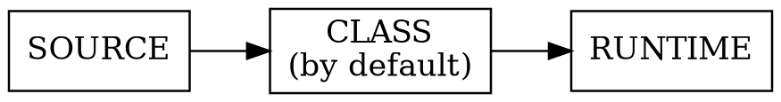
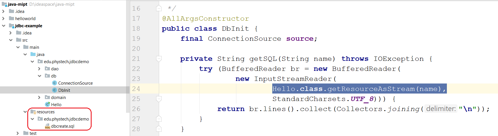
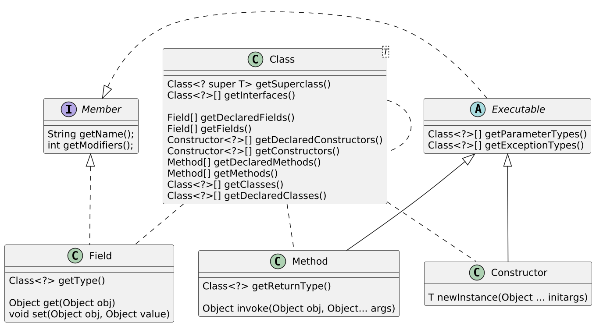
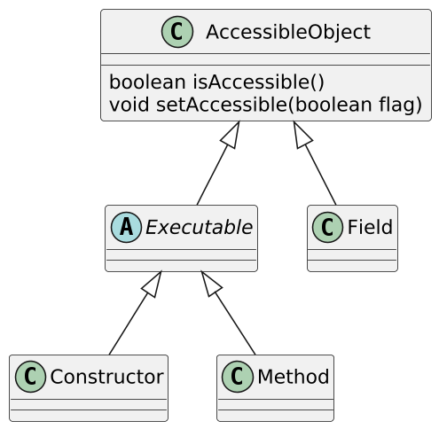
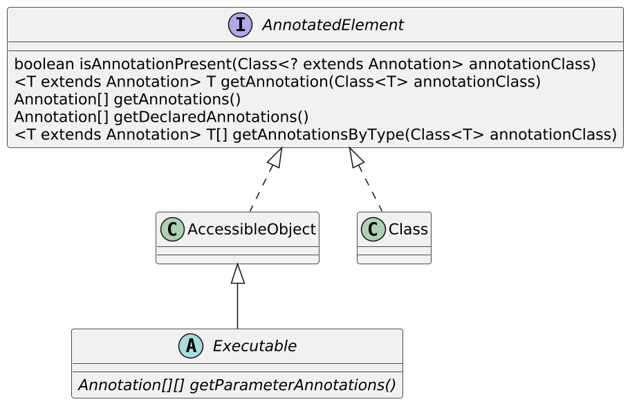
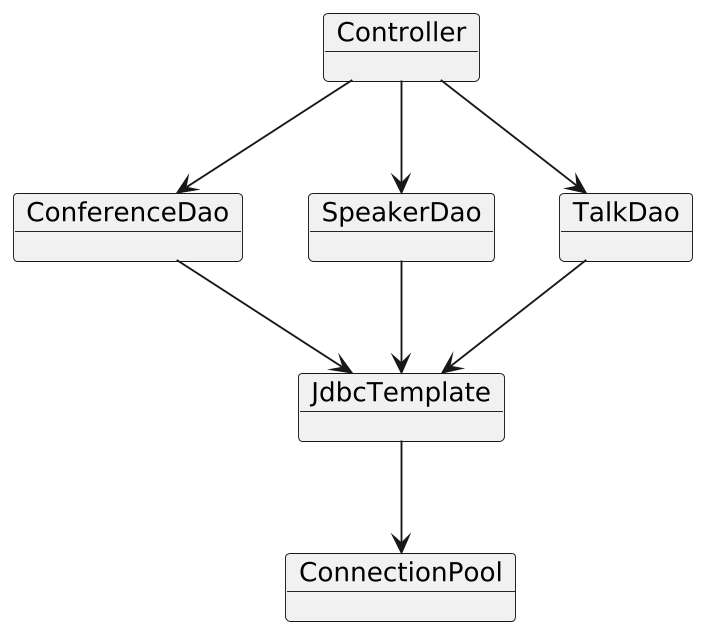
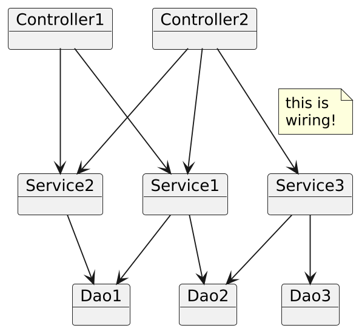
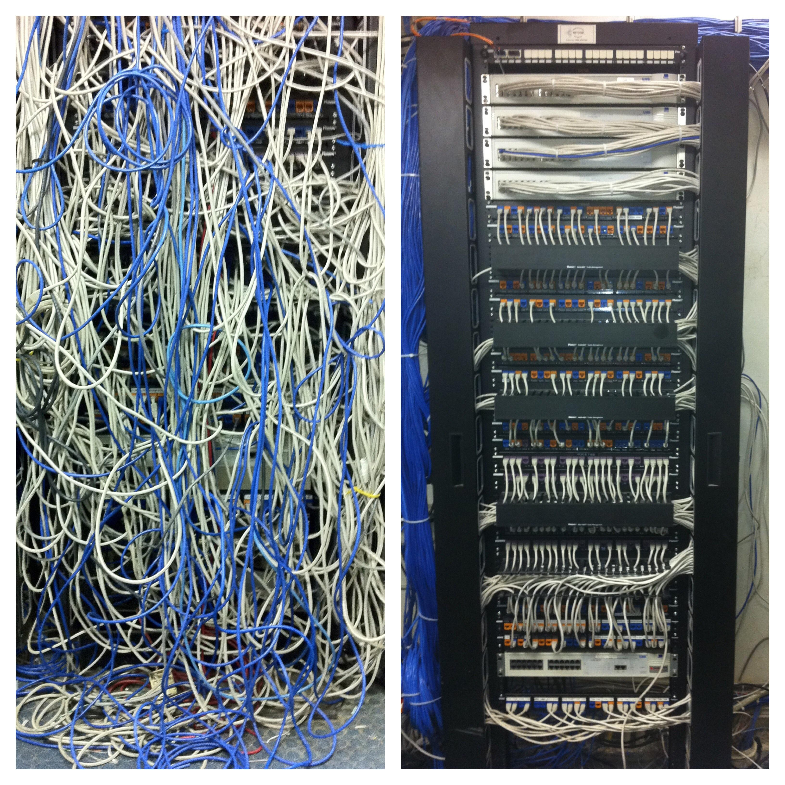

//Arrays are specified in curly braces
@BugReport(..., reportedBy = {"Harry", "Carl"})
//Same as {"Harry"}
@BugReport(..., reportedBy = "Harry")
//Constructing nested annotations
@BugReport(..., ref = @Reference(id = "12345"))
//... As you can see, using the allowed types,
//you can specify an arbitrarily complex data structureCore Java. Lecture #12
Annotations (ending). Reflection API. Application architecture. Singleton (anti)pattern
@inponomarev
Ivan Ponomarev, Synthesized.io/MIPT
Arrays and other annotations
The annotation value cannot be set to null. null will not be allowed even for default values. |
Where to use annotations
Declarations
Type usage
Use of annotations for declarations
Packages
Classes (including
enum)Interfaces (including annotation interfaces)
Methods
Constructors
Instance fields (including
enumconstants)Local variables' declarations
Parameter variables' declarations
Type parameters
Examples of the use of annotations in declarations
@Entity
public class User {
@Caption("user")
public User getUser(@Param("id") String userId) {
@SuppressWarnings("unchecked")
List<User> users = ....
}
}
class Cache<@Immutable V> {
...
}Annotate packages — in package-info.java
//package-info.java
@GPL(version="3")
package edu.phystech.corejava;
import org.gnu.GPL;Annotate the type usage
//annotated parameter that states that userId is not `null`
User getUser(@NonNull String userId) { ... }
//Annotated type usage: each line is not `null`
List<@NonNull String> list = ...
Comparator. <@NonNull String>reverseOrder()
class Warning extends @Localized Message { ... }
List<@Localized ? extends Message> = ...
(@Localized String) text
if (text instanceof @Localized String) ...
//etc., the list of examples is not complete.
//Annotations can be almost everywhere!Java8+: annotate type usage in this
public class Foo {
//type usage is being annotated!
void baz(@ReadOnly Foo this){
...
}
class Bar {
//type usage is being annotated!
public Bar(@ReadOnly Foo Foo.this) {
...
}
}
}Familiar standard annotations built into the Java language
Annotation | Applicable to | Meaning |
| Methods | Method overrides another method in a base class. Won’t compile if it’s not the case (see lecture on classes). |
| Interfaces | Marks interface as functional, i. e. having the only abstract method. Won’t compile if it’s not the case (see lecture on lambdas and method references). |
| Methods and constructors | Declares safe usage of parameterized varargs (see lecture on generics) |
Standard annotations built into the Java language
Annotation | Applicable to | Meaning |
| All API elements | This API element is deprecated — i. e. kept for backwards compatibility only, it is prohibited to use it in new code and it’s possible that this element will be removed in the future. |
| Everything except packages and annotations | Suppresses warnings of the given type that come from compiler and linters. |
| All API elements | Marks the code as automatically generated (and thus it doesn’t make sense to manually modify this code). |
Annotations are managed by annotations
//What code elements can be annotated
@Target({ElementType.TYPE, ElementType.METHOD})
//At what level are these annotations retained?
@Retention(RetentionPolicy.Source)
public @interface BugReport {
...
}Target
ElementType | Applicability of annotations |
| Annotation interfaces |
| Packages |
| Classes (including |
| Methods |
| Constructors |
| Fields |
| Method or constructor parameters |
| Local variable definitions |
| Type parameters |
| Type usage |
RetentionPolicy

Retention Policy | Annotation availability | API |
| In .java files for annotation processors. Do not get into .class files and runtime. | Language Model API |
| In .java files and .class files. Invisible at run time. | Instrumentation API |
| In .java files, .class files and at run time. | Reflection API |
Other meta-annotations
| All the annotations of this type will be included in the JavaDoc documentation. |
| If a class is marked with an annotation of this type, then all descendants of that class will also be marked with an annotation of the same type. |
| Allows you to specify whether an item can be marked multiple times with an annotation of the given type. |
Reflection API
Employee e = ... //assign Employee
Employee m = ... //assign Manager
//Get type information in run time
Class<? extends Employee> ce = e.getClass();
Class<? extends Employee> cm = m.getClass();
System.out.printf("%s, %s%n", ce.getName(), cm.getName());
//edu.phystech.hello.Employee, edu.phystech.hello.Manager
System.out.printf("%s, %s%n", ce.getSimpleName(), cm.getSimpleName());
//Employee, ManagerClass<T> class is parameterized
Documentation: "The actual result type of getClass() is Class<? extends |X|> where |X| is the erasure of the static type of the expression on which getClass is called."
Employee e = ...;
//No cast needed!
Class<? extends Employee> c = e.getClass();
//No cast needed!
Employee newEmployee =
ce.getDeclaredConstructor().newInstance();
//Compile-time error!
Class<? extends Number> cn = e.getClass();Class literals
Literals are strings in code that generate objects or values. For example, ''foo'' is a literal that generates a
Stringobject with "foo" value.Class literals are special expressions in the language that generate objects of type
Class<…>.
Class literals — examples
//everything is clear here
Class<String> c1 = String.class;
Class<Integer> c2 = Integer.class;
//Yes, you can!!
Class<Integer> c3 = int.class;
//And also double.class, boolean.class, etc.
//Note that c2 and c3 are significantly DIFFERENT objects.
//(for example, c3.getConstructors() returns an empty array.)
//There is nothing unexpected here, you can parameterize by arrays:
Class<int[]> c4 = int[].class;NB: strange array class names
When reading error logs, you can meet the following:
Type |
|
| [B |
| [S |
| [I |
| [J |
| [C |
| [D |
| [F |
| [Z |
| [Ljava.lang.Integer; |
Dynamic way to get a meta-class
//ClassNotFoundException can be thrown
//the type parameter cannot be known in advance here
Class<?> clazz =
Class.forName("edu.phystech.hello.Manager");
//There are two forms:
//class loader of the calling method, static initialization
static Class<?> forName(String className)
throws ClassNotFoundException
//custom class loader, static initialization on demand
static Class<?> forName(String name, boolean initialize,
ClassLoader loader)Resource files loading
public InputStream getResourceAsStream(String name)
public java.net.URL getResource(String name)
Analyzing class capabilities and interacting with class members

Retrieving Class Members
getXXX— all public elements (fields, constructors, methods)getDeclaredXXX— all elements declared in this class (no inherited ones)
Accessing Class Members

By default, access is determined by visibility levels (e.g. private elements are not available)
Access can be granted by
setAccessible(true)
Analysis of annotations in runtime

Reflection and Generics
In the runtime, you cannot define type parameters of an object (for example, you cannot distinguish
List<Employee>fromList<Integer>).You can use reflection to find out all the information about type parameters of parameterized classes (e.g.
List<T>) or methods (e.g.<T extends Comparable<? super T>> T min (T[] a)).
Reflection Utilities
Reflection API is quite old, uses arrays (inconvenient in the era of streams and collections).
Many frequent tasks (for example, to get everything - public and private, own and inherited elements) do not have ready-made methods.
You can use ready-made libraries, for example, Reflections (https://github.com/ronmamo/reflections).
Class with annotated fields
public class Person {
@Published
private final String firstName;
@Published
private final String lastName;
@Published
private final LocalDate birthDate;
...
}JsonSerializer: determine which fields are annotated with @Published
public class JsonSerializer<T> {
private final Set<Field> publishedFields;
public JsonSerializer(Class<T> serializedClass) {
publishedFields = ReflectionUtils
.getAllFields(serializedClass,
f -> f.isAnnotationPresent(Published.class));
publishedFields.forEach(f -> f.setAccessible(true));
}JsonSerializer: serialize the object
public JSONObject serialize(T o) {
JSONObject result = new JSONObject();
for (Field f : publishedFields) {
Object fieldValue = null;
try { fieldValue = f.get(o); }
catch (IllegalAccessException e) {
throw new IllegalStateException(e); }
if (fieldValue instanceof LocalDate) {
result.put(f.getName(),
((LocalDate) fieldValue).format(DateTimeFormatter.ISO_LOCAL_DATE));
} else {
result.put(f.getName(), fieldValue);
}
}
return result;
}Example with Controller
public class Controller {
private final Service service;
@Command("foo")
void doSomething() {
service.foo();
}
@Command("bar")
void bar() {
service.bar();
}
@Command()
void help() {
service.help();
}
}CommandDispatcher
public class CommandDispatcher {
private final Object controller;
private final Map<String, Method> methodHashMap =
new HashMap<>();
private Method defaultMethod;CommandDispatcher: Initialization
public CommandDispatcher(Object controller) {
Objects.requireNonNull(controller);
this.controller = controller;
for (Method method : ReflectionUtils
.getAllMethods(controller.getClass())) {
Command command = method.getAnnotation(Command.class);
if (command != null) {
//Extract the parameter from the annotation
String commandId = command.value();
if (commandId.isEmpty()) {
defaultMethod = method;
} else {
methodHashMap.put(commandId, method);
}
}
}
}CommandDispatcher: Executing the Command
public void executeCommand(String command)
throws InvocationTargetException, IllegalAccessException {
Method method = methodHashMap
.getOrDefault(command, defaultMethod);
if (method != null){
method.invoke(controller);
}
}Our case study about reports and speakers


Real "layered" architecture of the server application


Attempt #1, naïve. "Let the objects create for themselves what they need"
public class DataSource {
private ConnectionPool pool = new ConnectionPool(....);
// parameters taken from somewhere to connect to the database ^^^^^^
...
}
public class SpeakerDao {
private DataSource ds = new DataSource();
...
}
public class TalkDao {
private DataSource ds = ???
//we need one ConnectionPool for all...
//doesn't work :-(
...
}Attempt #2. Let’s put a to a single object in a static field
public class ConnectionPool {
private final static ConnectionPool instance =
new ConnectionPool(...);
public static ConnectionPool getInstance() {
return instance;
}
//we will make the constructor private so that no one is tempted
//to create the object explicitly
private ConnectionPool(...) {
}
}Attempt #2. (continued)
public class DataSource {
private final static DataSource instance = ...
public DataSource getInstance() {
return instance;
}
private ConnectionPool pool = ConnectionPool.getInstance();
private DataSource() {
...
}
}We just invented the "Singleton" design pattern!
 |
|
Singleton Pattern
Direct creation is not possible (encapsulated in a private constructor).
Access a single instance only through the static
getInstance()method (or thefinalvariableINSTANCE).Leads to architectural problems.
But first, let’s digress and try to properly "cook" the singleton.
Singleton brewing: attempt #1
public class Singleton {
//Singleton creation is "hidden"
private static final Singleton instance = new Singleton();
public static Singleton getInstance() {
return instance;
}
//We prohibit the option to create another instance "from the outside"
private Singleton(){
}
}A "heavy" object is created always, even if getInstance is not called?
Attempt #2
public class Singleton {
private static Singleton instance;
public static Singleton getInstance() {
if (instance == null) {
instance = new Singleton();
}
return instance;
}
private Singleton(){
}
}What if multiple threads are accessing the instance variable?
Attempt #3 ?!
public class Singleton {
private static volatile Singleton instance;
public static Singleton getInstance() {
if (instance == null) {
instance = new Singleton();
}
return instance;
}
private Singleton(){
}
}Now there is no guarantee that the instance is being created only once!
Attempt #4 ?! ?!
public class Singleton {
private static Singleton instance;
public static synchronized Singleton getInstance() {
if (instance == null) {
instance = new Singleton();
}
return instance;
}
private Singleton(){
}
}All the threads will queue up just to access the instance variable?
Attempt #5 ?! ?! ?!
public class Singleton {
private static Singleton instance;
private static final Object lock = new Object();
public static Singleton getInstance() {
if (instance == null)
synchronized (lock) {
if (instance == null)
instance = new Singleton();
}
return instance;
}
private Singleton() {
}
}Now the program is broken. Due to the fact that reading of the instance field is not synchronized in the first if block, it is possible to read a partially initialized object (if the Singleton constructor is inlined).
Attempt #6 . . .
public class Singleton {
private static volatile Singleton instance;
private static final Object lock = new Object();
public static Singleton getInstance() {
if (instance == null)
synchronized (lock) {
if (instance == null)
instance = new Singleton();
}
return instance;
}
private Singleton() {
}
}Well, almost. But we have a performance overhead, because we read the volatile variable twice.
Attempt #7. Code from the book "Effective Java, 3rd edition"
Joshua Bloch: "On my machine, this method is about 1.4 times as fast as the obvious version without a local variable". [EJ, 3rd ed., pp. 334-335]
public class Singleton {
private static volatile Singleton instance;
private static final Object lock = new Object();
public static Singleton getInstance() {
Singleton result = instance;
if (result == null) {
synchronized (lock) {
if (instance == null)
instance = result = new Singleton();
}
}
return result;
}
}Attempt #7. Code from the book "Effective Java, 3rd edition"
Do you already see the bug in the following code?
public class Singleton {
private static volatile Singleton instance;
private static final Object lock = new Object();
public static Singleton getInstance() {
Singleton result = instance;
if (result == null) {
synchronized (lock) {
if (instance == null)
instance = result = new Singleton();
}
}
return result;
}
}If instance != null when we enter the synchronized block, we will return null.

The Only Correct Lazy Thread-Safe Singleton Implementation
public class Singleton {
private static volatile Singleton instance;
private static final Object lock = new Object();
public static Singleton getInstance() {
Singleton result = instance;
if (result != null)
return result;
synchronized (lock) {
if (instance == null)
instance = new Singleton();
return instance;
}
}
private Singleton() {}
}OR NOT?
Attempt #8
// Correct lazy initialization in Java
public class Singleton {
private static class SingletonHolder {
public static final Singleton instance = new Singleton();
}
public static Singleton getInstance() {
return SingletonHolder.instance;
}
private Singleton() {
}
}